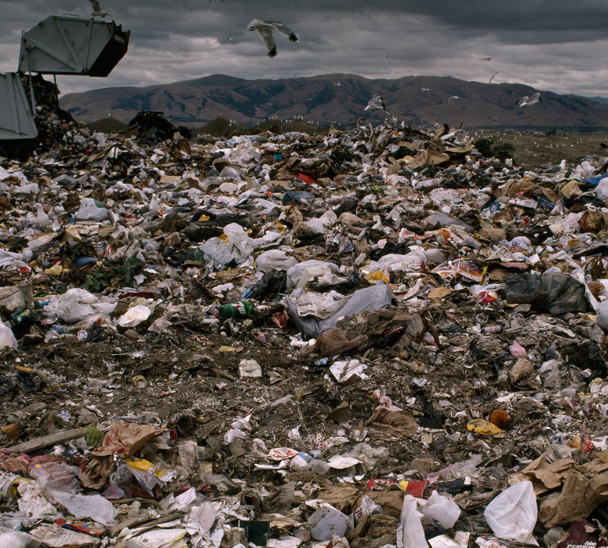

a student-led campaign
human lives are being exploited for big tech production.
we are a group of college students hoping to spread awareness about how the technology we consume is created. together, we can incite change.
the story
resource extraction: mining for metals like aluminum, copper, cobalt, gold, silver, platinum, and rare earth metals contributes to land degradation, habitat loss, and deforestation. For instance, coltan mining in the Democratic Republic of Congo has been linked to the destruction of gorilla habitats.
pollution: toxic chemicals used in extraction and production processes generate hazardous waste, contaminating soil and water sources. Greenhouse gas emissions from smartphone production, transportation, and marketing contribute to climate change.
labor conditions: in some countries, child labor is employed in mines and factories for the extraction and processing of metals. Workers often face exposure to toxic substances, long hours, lowwages, and poor safety standards.
conflict minerals: some minerals used in smartphones are sourced from conflict zones, where their extraction finances armed groups and perpetuates violence.

e-waste: the short lifespan of smartphones and frequent upgrades generate electronic waste, much of which is improperly disposed of, leading to soil and water pollution.
join the movement
By using the Smartphone Sustainability Nutrition Label sticker or QR Code sticker, you can encourage others to join the movement toward more sustainable and ethical practices in the tech industry. Spread the word, make informed choices as a consumer, and support organizations making a real difference.
Together, we can contribute to a more sustainable future for our planet and its inhabitants. Order your Smartphone Sustainability Nutrition Label sticker or QR Code sticker today and become an advocate for change.